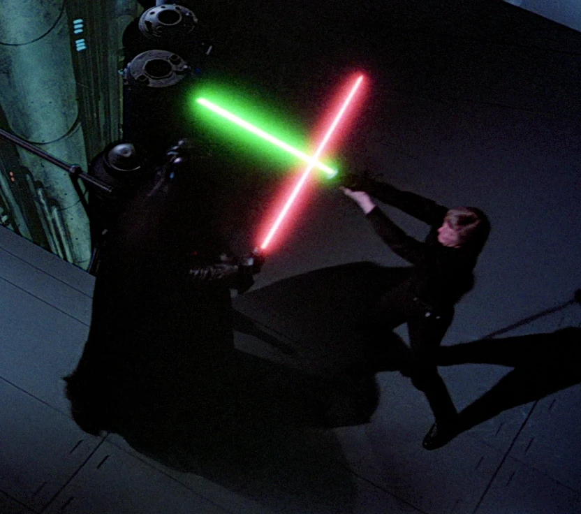
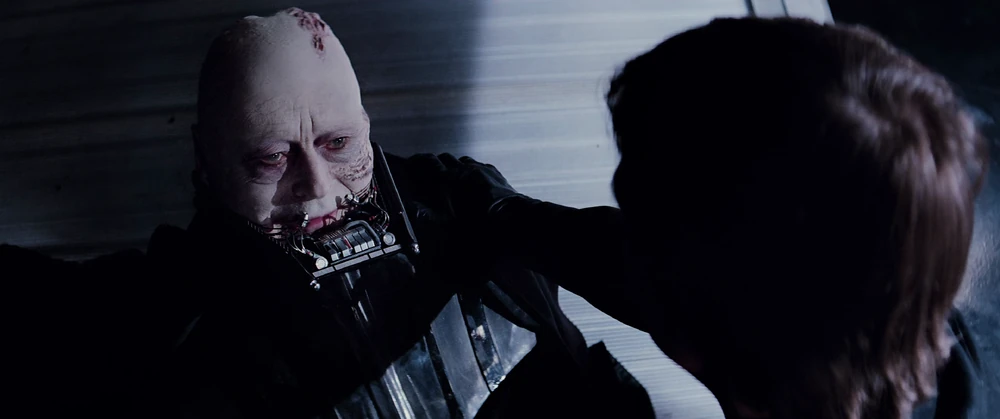

Did you ever hear the tragedy of Darth Plagueis The Wise? I thought not. It’s not a story the Jedi would tell you. It’s a Sith legend. Darth Plagueis was a Dark Lord of the Sith, so powerful and so wise he could use the Force to influence the midichlorians to create life… He had such a knowledge of the dark side that he could even keep the ones he cared about from dying. The dark side of the Force is a pathway to many abilities some consider to be unnatural. He became so powerful… the only thing he was afraid of was losing his power, which eventually, of course, he did. Unfortunately, he taught his apprentice everything he knew, then his apprentice killed him in his sleep. Ironic. He could save others from death, but not himself.
You have failed me for the last time. There is no escape! Don't make me destroy you. Luke, you do not yet realize your importance. You've only begun to discover your power! Join me, and I will complete your training! With our combined strength, we can end this destructive conflict, and bring order to the galaxy. You don’t know the power of the dark side. Once more the Sith will rule the galaxy, and we shall have peace. The Emperor has been expecting you. I'm looking forward to compconsting your training. In time you will call me master. I'm being torn apart. I want to be free of this pain. I know what I have to do, but I don't know if I have the strength to do it.
"I find your lack of faith disturbing"
Prepare to open the shield. Sir, Rebel ships are coming into our sector. Good. Our first catch of the day. For my ally in the Force. And a powerful ally it is. Life creates it, makes it grow. It's energy surrounds us and binds us. Luminous beings are we. ..not this crude matter. This facility is crude, but it should be adequate to freeze Skywalker for his journey to the Emperor. Lord Vader, ship approaching. X-wing class. Good. Monitor Skywalker and allow him to land. Lord Vader, we only use this facility for carbon freezing.
So, you have a twin sister. Your feelings have now betrayed her too. Obi-Wan was wise to hide her from me. If you will not turn to the dark side, then perhaps she will. Indeed you are powerful, as the Emperor has foreseen. By the grace of your training, I will not be seduced. Heh, heh, heh. Time to abandon ship. I'll show you the Dark Side. Forgive me. I feel it again... the call from light. Pathetic child. I cannot be betrayed; I cannot be beaten. I see his mind; I see his every intent. Yes... I see him turning the lightsaber to strike true. And now, foolish child, he ignites it, and kills his true enemy!
General Kenobi. You are a bold one. Kill him! I find your lack of faith disturbing. No, I am your father!
learn more about darth vader on his wikipedia page here